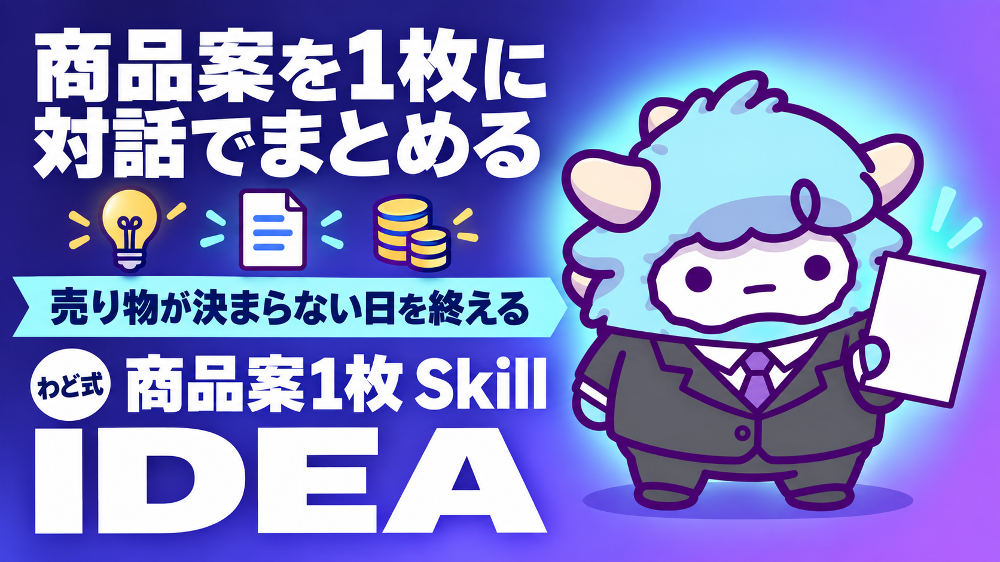

商品案1枚 Claude Code Skill 版
M2 の Gem と同じ対話を、Claude Code で回す上級者版
このページが特典の本体です。下へスクロールして使ってください商品案1枚 Claude Code Skill 版
「STEP2 コンテンツ商品づくり AI」と同じ対話を、Claude Codeの中で何度でも呼び出せる形にしました。商品の核・届ける相手・最初の記事の3つを、1つのコマンドで1本の線につなげます。
はじめに
わどです。この特典は、すでにClaude Codeを日常的に使っている方向けの、少し上級者寄りの1枚です。
「STEP2 コンテンツ商品づくり AI」という特典で、Geminiの専用AI(Gem)を使った「商品の核 → 届ける相手 → 最初の記事」という対話をご紹介しています。あの対話はとても効きます。ただ、Geminiのアプリを開いて、Gemを呼び出して、という手順を毎回踏むのが面倒に感じる方もいます。すでにClaude Codeをターミナルやエディタの中で動かしている方なら、なおさらです。
このページにあるのは、その対話をそのまま「スキル」というファイル1枚に落とし込んだものです。一度手元に置いてしまえば、あとは短いコマンドを打つだけで、同じ質問・同じ順番・同じ出力形式で、何度でも商品案を作り直せます。Geminiに切り替える必要も、毎回同じ前置きを打ち込み直す必要もありません。
考え方そのものはGem版とまったく同じです。「誰の・どんな悩みを・どうやって・どんな成果に変えるか」を、想像ではなく自分の経験から言葉にする。その核が一番刺さる相手を一人に絞る。その相手に向けて、最初の記事を1本書く。この順番を守ることが、商品案の質を決めます。
この特典の進め方
- 「2. Claude Code Skill 全文(SKILL.md)」をコピーし、自分のパソコンにファイルとして保存します(5分)
- Claude Codeを起動し、「3. 最初の対話例」を参考に呼び出します
- 4つのステップに沿って質問に答えていきます(合計30〜45分)
- 最後に「商品案1枚」と「商品ペルソナ1枚」、最初の記事のテーマ案が手元に残ります
Claude Codeの基本的な動かし方に不安がある場合は、先に特典「Claude Code 最初の30分」を済ませてから戻ってくることをおすすめします。ここでは、すでにClaude Codeが動く状態であることを前提に進めます。
最初のゴール(今日やる1つ)
今日のゴールは1つです。
SKILL.mdを保存し、Claude Codeで一度呼び出して、商品案1枚のたたき台を1つ作る。
完璧な言葉にする必要はありません。今日は「対話が最後まで回る」ことを確認できれば十分です。磨き込みは翌日以降、何度でもできます。
1. 考え方(何を決めれば商品になるか)
商品になっていない状態と、商品になっている状態の違いは、実はシンプルです。次の4つが、1文で言えるかどうかです。
- 誰の(具体的な一人)
- どんな悩みを(検索する言葉になるくらい具体的に)
- どうやって(あなたにしかできないやり方)
- どんな成果に変えるか(相手が体感できる変化)
多くの人がつまずくのは、ここを「想像」で埋めようとするからです。想像の相手は、実在する誰とも重ならないので、言葉が誰にも刺さりません。一番良いペルソナは、いつも「過去の自分」です。自分が悩んでいたときの言葉、検索していた言葉、夜眠れなかった本音。それをそのまま使うほうが、他人を想像して作るよりずっと解像度が高くなります。
もう一つ大事なのが順番です。先に「商品の核」を決め、その核が一番刺さる相手を絞り、その相手に向けて記事を書く。この順番を逆にして、先に記事を量産してしまうと、後から核を当てはめる作業になり、書き直しばかり増えます。だからこのスキルでも、あえて核→相手→記事の順で対話を組んでいます。
うまくいかなかった経験ほど、実は商品の核になります。隠さずに書き出すほど、言葉に力が宿ります。そして一度で完璧を目指す必要はありません。何度でも作り直せる前提で、まずは手を止めずに最後まで対話を終えることを優先してください。
2. Claude Code Skill 全文(SKILL.md)
下のファイルをコピーして、~/.claude/skills/product-idea-one-pager/SKILL.md として保存してください。フォルダが無ければ新しく作って構いません。
---
name: product-idea-one-pager
description: 対話しながら「商品案1枚」「商品ペルソナ1枚」「最初の記事テーマ・下書き」を、核→相手→記事の順で作るスキル。想像ではなく自分の経験を土台にする。
version: 1.0.0
---
# 商品案1枚 Skill
## 使う場面
- ゼロから商品コンセプトを考えたい
- 経験から商品の方向性を複数出してほしい
- すでにある商品案・ペルソナ・記事を診断して直したい
## 進め方(必ずこの順番で)
### Step 1: 商品の核を言葉にする
次を1つずつ聞く。答えが曖昧なら「具体的には?」と1回だけ聞き返す。
1. 今までで一番「うまくいかなかった」経験は何か
2. そこから、どうやって抜け出したか(具体的な行動)
3. 同じ状態の人を1人思い浮かべると、誰か
4. その人に、何を・どうやって・どんな成果に変えて渡せるか
出力: 「誰の・どんな悩みを・どうやって・どんな成果に変えるか」を1文にまとめた「商品案1枚」の下書き。
### Step 2: 届ける相手を一人に絞る
Step 1で出した「その人」を、次の観点でさらに具体化する。
- 属性(年齢層・置かれている状況。個人が特定できない範囲でよい)
- 普段の生活で何にいちばん時間を使っているか
- 検索しそうな言葉(悩みをそのまま言葉にする)
- 夜眠れないときに考えていそうな本音
出力: 「商品ペルソナ1枚」。属性・生活・悩み・本音・刺さる言葉をまとめる。
### Step 3: 記事のテーマを出す
Step 2のペルソナが検索しそうな言葉をもとに、記事テーマを10案出す。
「自分が体験を話せるテーマ」には印をつける。読まれやすさが違うため。
### Step 4: 最初の記事を1本仕上げる
Step 3で印をつけたテーマから1つ選び、タイトル・冒頭フック・本文構成・最後の誘導(CTA)まで一気に作る。
誘導先は「LINE登録」「無料相談」など、ユーザーが普段使っている接点でよい。毎回同じ誘導先で構わない。
## 出力形式
最後に必ず次の3点セットをまとめて出す。
1. 商品案1枚(誰の・どんな悩みを・どうやって・どんな成果に変えるか)
2. 商品ペルソナ1枚(属性・生活・悩み・本音・刺さる言葉)
3. 記事テーマ案10個(印つき)+最初の記事1本の構成
## 判断基準
- 答えが一般論に流れたら、「あなたの実体験ではどうでしたか」と聞き直す
- 実績・成果の数字は、ユーザーが実際に口にしたものだけを使う。想像で数字を足さない
- 「誰にでも当てはまる案」が出たら、それは商品になっていないサインとして扱い、対象をもう一段絞るよう促す
- ユーザーが「分からない」と答えたら、具体例を3つ提示して選んでもらう(GPTs版と同じふるまい)
## 禁止事項
- 成果を保証する表現(「必ず」「誰でも」「100%」)を出力に含めない
- 実在しない実績・お客様の声を作らない
- ユーザーが答えていない情報を、AIの想像で埋めて確定させない
## セルフチェック(出力前)
1. 4つの要素(誰の・悩み・どうやって・成果)が、すべて1文で言えているか
2. ペルソナは「想像の誰か」ではなく「実在の経験」に基づいているか
3. 記事テーマは、ペルソナの検索語に近い言葉になっているか
4. 誇大表現・断定表現が混ざっていないか
3. 最初の対話例
Claude Codeを起動し、次のように話しかけると始まります。
product-idea-one-pager のスキルで、商品案を一緒に作ってください。
今日はStep 1から順番に進めてください。
その後は、こんなやり取りになります。
AI: 今までで一番「うまくいかなかった」経験は何ですか。
あなた: 会社員のとき、頼まれた資料作りに毎回時間がかかりすぎて、
定時に帰れない日が続いていました。
AI: そこから、どうやって抜け出しましたか。具体的な行動を教えてください。
あなた: AIに毎回同じ指示を書き直すのをやめて、1枚の指示書にまとめて
渡すようにしたら、資料作りの時間が半分くらいになりました。
AI: 同じ状態の人を1人思い浮かべると、誰ですか。
あなた: 前の職場にいた、いつも資料作りで残業していた後輩です。
ここまでで、Step 1の材料がそろいます。あとはStep 2〜4へ、AIが順番に質問を続けてくれます。途中で止まっても、「ここまでを要約して」と伝えれば、続きから再開できます。
4. 出てきた案の磨き方(3問)
商品案1枚ができあがったら、次の3つの問いで磨いてください。
- これは「誰にでも当てはまる案」になっていないか。もし当てはまるなら、対象をもう一段絞れないか
- 相手が読んだときに、「これは自分のことだ」と思える言葉になっているか。一般的な言い回しに逃げていないか
- 今日から動ける「最初の1本」につながっているか。壮大すぎて、明日から何をすればいいか分からない案になっていないか
3つすべてに「はい」と言えるまで、Step 1からやり直して構いません。作り直すたびに、言葉の解像度は上がっていきます。
5. 最新AI(2026年9月時点)での変わり目(取得日: 2026-09-06)
2026年9月3日に、コンピューター操作を主機能に含む新しいAIモデルが発表されました。画面の情報を読み取り、承認されたアプリを人間と同じ画面経由で操作できる、という位置づけのモデルです。
この特典との関係で言うと、将来的には「商品案1枚を作ったあと、その内容をもとに販売ページの下書きまで、AIが画面操作を含めて一気に進める」という使い方が広がっていく方向にあります。ただし提供は段階的に始まったばかりで、同じプランに入っていても、まだ自分の画面には出ていないこともあります。
現時点でできることは変わりません。「核→相手→記事」の順番で対話を進める、という考え方そのものは、どのAIモデルに切り替わっても土台として残り続けます。モデルが賢くなるほど、この順番を守って対話することの効果はむしろ大きくなります。
6. 次の一手
商品案1枚ができたら、次にやることは2つです。
一つは、その案をもとに実際に記事を1本書いて、反応を見ること。反応は「良い・悪い」で見るのではなく、「どの言葉に人が止まったか」で見てください。もう一つは、最初の1件を受ける準備です。稼ぐ順番で言うと、この特典はSTEP2(コンテンツ商品づくり)の入口にあたります。
面談では、あなた専用の1枚(特注のロードマップ)を一緒に作ります。
最初に投げるプロンプト
自分で対話を組み立てるのが難しい場合は、次のプロンプトをそのままAI(ChatGPT・Gemini・Claudeのどれでも)に投げてください。
私の商品案を、次の順番で一緒に作ってください。
1. 私に「今までで一番うまくいかなかった経験」を聞いてください
2. そこからどう抜け出したか、具体的な行動を聞いてください
3. 同じ状態の人を1人思い浮かべてもらい、その人の属性・生活・悩み・
検索しそうな言葉・夜眠れないときの本音を深掘りしてください
4. その人に向けた記事テーマを10個出してください
5. 私が「体験を話せる」と答えたテーマを1つ選び、タイトル・冒頭フック・
本文構成・最後の誘導までまとめて作ってください
途中で私が「分からない」と答えたら、具体例を3つ出して、選ばせてください。
実在しない実績や数字は作らないでください。
よくある失敗 7つと直し方
- 想像のペルソナで進めてしまう → 「過去の自分」を思い出すところからやり直す
- 記事から先に量産してしまう → 核・相手が決まるまで、記事は書かない
- 一度で完璧を狙って止まってしまう → たたき台のまま次のステップに進み、あとで磨く
- 悩みが一般的な言葉のまま止まる → 「具体的には?」を自分にも1回聞く
- 誰にでも当てはまる案になる → 対象をもう一段絞り、固有名詞に近づける
- 答えを1回でまとめて話してしまい、対話が浅くなる → 1問ずつ、順番に答える
- 出てきた案をそのまま使ってしまう → 「4. 出てきた案の磨き方」の3問を必ず通す
安全に使うための注意
- 実績・お客様の声・数字は、実在するものだけを使ってください。根拠のない数字は「[ここに自分の実績を入れる]」のように空欄で残してください
- 「必ず」「絶対」「誰でも」「保証」「100%」「確実に」といった言い切り表現が出力に混ざっていないか、毎回確認してください
- ペルソナに実在の第三者の名前・連絡先を書き込まないでください。個人が特定できる書き方も避けてください
- 出てきたものをそのまま使わず、最後は自分の目で読み返す工程を必ず残してください
つまずいたときに聞くプロンプト
いま作った商品案1枚を見て、「誰にでも当てはまる」と感じる部分を
3つ指摘してください。それぞれ、どう具体化すれば直るかも教えてください。
このペルソナの言葉づかいが、実在の人の言葉というより
一般論に聞こえる箇所を指摘してください。
用語集
| 用語 | 意味 |
|---|---|
| 商品案1枚 | 誰の・どんな悩みを・どうやって・どんな成果に変えるかを、1文にまとめたもの |
| 商品ペルソナ | 商品を届ける、たった一人の相手を言葉にしたもの |
| 核 | 商品案の中心にある、一番譲れない価値 |
| 刺さる言葉 | ペルソナが実際に検索したり口にしたりする、生の言葉 |
| CTA | 記事の最後に置く、次の行動への誘導(LINE登録・無料相談など) |
| Skill | AIに繰り返し同じ手順・判断基準で動いてもらうための指示書ファイル |
出す前の品質チェック(10項目)
- 商品案1枚が、誰の・悩み・どうやって・成果の4要素で1文になっているか
- ペルソナが「想像」ではなく「実在の経験」に基づいているか
- 記事テーマがペルソナの検索語に近い言葉になっているか
- 「誰にでも当てはまる」表現が残っていないか
- 誇大表現・断定表現(必ず・誰でも・保証など)が混ざっていないか
- 実績・数字は実在するものだけを使っているか
- 実在の第三者の名前・連絡先が書き込まれていないか
- 誤字脱字・文字化けがないか
- 出てきたものを、自分で最後まで読み返したか
- 「3. 出てきた案の磨き方」の3問すべてに「はい」と言えるか
最終チェックリスト
- [ ] SKILL.mdを
~/.claude/skills/product-idea-one-pager/SKILL.mdとして保存した - [ ] Claude Codeで一度呼び出し、Step 1から4まで最後まで進めた
- [ ] 商品案1枚・商品ペルソナ1枚・記事テーマ案が手元に残った
- [ ] 「4. 出てきた案の磨き方」の3問を通した
- [ ] 出す前の品質チェック(10項目)を確認した
- [ ] 記事を1本書いて、反応を見る予定を立てた